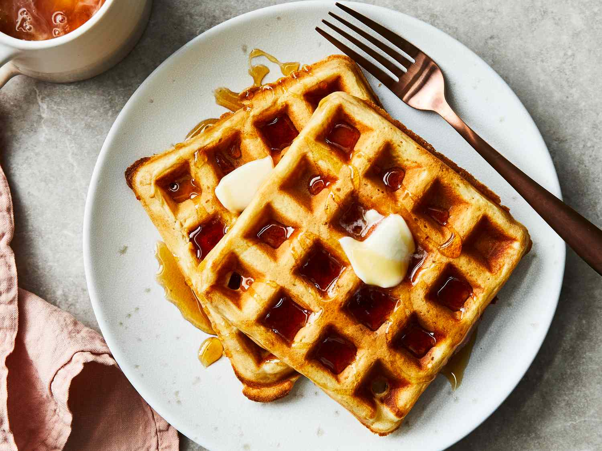

A classic waffle can described as a popular breakfast dish made from leavened batter cooked between patterned plates, resulting in a crisp, golden-brown exterior and a light, airy interior. The deep pockets are designed to hold butter and syrup. These waffles are traditionally cooked in a waffle iron until crisp.